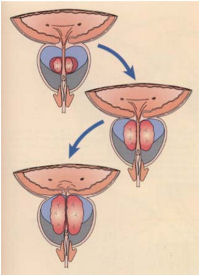
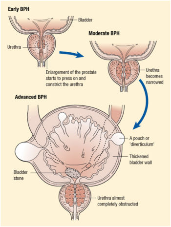
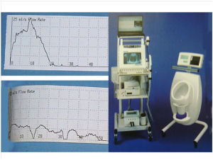

What is BPH?
Benign Prostatic Hypertrophy(BPH) is a condition in which the central portion of the prostate enlarges.Benign prostatic hypertrophy(BPH) It occurs in all men after the age of 40 to varying degrees. The central portion of the prostate enlarges over time as shown opposite. The enlargement causes compression of the tube through which the urine flows (urethra). As a result the urine flow slows down.
Symptoms
The symptoms of prostatic enlargement are very variable and are related to the prostatic obstruction (voiding) and the bladder straining to empty (storage).
The prostate gland has a distribution of channels similar to a tree with numerous glands (leaves) that produce fluid which travel along tubes (branches) and is mixed with the sperm and fluid from the seminal vesicles. This is the fluid in the ejaculation that comes out of the penis.
These are the classic symptoms of prostate enlargement. They are a spectrum where one may only have a few or all the symptoms to varying degrees.
The flow of any fluid is related to the pressure (bladder squeezing) divided by the resistance (prostatic enlargement). As the resistance increases, the flow slows down. To compensate, the bladder squeezes harder to get the urine out. Any muscle that pushes harder increases in size. As a result, the bladder becomes thickened and develops pouches. This makes the bladder irritable and therefore it becomes overactive and the patients voids more often. It also may fail to empty fully and allow stones to form in the bladder which leads to more bladder irritation.
Investigations
The investigations are fairly straight forward:
A detailed history of your symptoms. Blood tests to check your kidney function and PSA level Urine sample to check for blood and infection A urine flow test and ultrasound scan of your bladder after voiding (see opposite)
This picture shows a flow rate machine, which measures the strength of your urine flow, along with an ultrasound machine, which scans your bladder to ascertain how well you empty your bladder - your bladder should always be empty after voiding.
The top graph shows someone who has very good flow while the lower one demonstrates poor flow.
A simple guide is how high someone can void in a urinal when using a public convenience.
However, some gentlemen with prostate enlargement may have reasonable flow. This is usually because his bladder squeezes harder to compensate. In this situation, the patient may only have symptoms of bladder irritation with increased urinary frequency and urgency.
Treatment
Whether one needs treatment for BPH depends on how bothered the patient is by his symptoms. Often reduction in alcohol and caffeine products is all that is required.
Drug Treatment
There are two main types of drug prescribed for the treatment of BPH. The majority of men with moderate symptoms and even those with severe symptoms will be tried on these medications.
Alpha Blockers
This type of drug works by relaxing muscle fibres in the prostate and in the neck of the bladder. This reduces the obstruction in the prostate and therefore improves the urinary flow. Examples of this drug are tamsulosin and alfuzosin. The effectiveness of the medication should be noticed within a few days. However, I find patients don't really notice how good the drug is until they forget to take it! Common side effects include dizziness and tiredness. One may also notice retrograde ejaculation whereby the seminal fluid goes into the bladder and is voided out later. This is not a concern unless trying to conceive. In fact, this suggests the drug is working well by relaxing the prostate and bladder neck. Alpha blockers will not cure BPH but may alleviate the symptoms. Over time the benefit of the treatment may reduce.
5-alpha-reductase inhibitors
This type of medication works by blocking the conversion of testosterone to dihydrotestosterone. The latter hormone has a profound effect on prostate growth. The inhibition of this hormone causes the prostate to shrink which reduces the compression of the urethra resulting in an improvement in the urinary flow. Patients with larger prostates benefit more from this type of medication but it can take up to 6 months before any improvement is noticed. This drug will also reduce a patient's PSA levels by approximately 50% so this has to be taken in to account if your PSA is been monitored for prostate cancer. Potential side effects include a reduced sex drive (libido) and tenderness around the nipples. There is evidence that taking both an alpha blocker and a 5-alpha-reductase inhibitor in combination is useful in men with large prostates and severe symptoms. The combination of both these drugs appears better than if taken in isolation.
Other Drugs Used For BPH
Anticholinergic medication is used to help calm the bladder and reduce urgency and urinary frequency. It should only be used if the urine flow is reasonable as the calming effect on the bladder may cause urinary retention. A diuretic (water tablet) taken in the afternoon can encourage the kidneys to produce more urine before bedtime and thus reduce the number of night time visits to the toilet (nocturia).
Surgery: TURP
This type of surgery is one of the commonest operations carried out by urologists. The end result is that the enlarged portion of the prostate is removed and the obstruction is removed. There are many ways of achieving this including using a laser. I will describe the commonest method (TURP) and a new alternative method (TUVIS) where the prostate tissue is vaporised. I have introduced TUVIS to Kent and believe it is a good alternative to other methods.
TURP: Trans-urethral resection of the prostate.
This operation is carried out using an instrument passed down the penis which cores out the prostate. Small chips of prostate tissue are then removed and sent for analysis. This results in the obstruction to the flow of urine been reduced so the patient will notice an immediate improvement in the urine flow. It can, however, often take a couple of months for the symptoms relating to the bladder (urgency and frequency of urination) to settle. The operation is carried out under a full anaesthetic - the patient can be asleep or can be awake with a spinal anaesthetic, which blocks any sensation from the belly button down. I often recommend a spinal anaesthetic with some light sedation so the patient isn't aware of the operation but can make a rapid recovery after the operation. Occasionally, some gentlemen will just have a spinal anaesthetic and watch the operation on a screen as I carry it out!
After Surgery
Patients will have a catheter in place for a couple of days as there is usually some bleeding. Once the catheter is removed, one should notice an immediate improvement in the flow. One has to remember to take it easy afterwards. The recovery is very quick because there are no incisions or scars but one needs to avoid heavy lifting or straining as this may cause bleeding. It is very common to notice some blood at the start of voiding 10 to 14 days after the operation.
This operation should not effect erectile function (as opposed to a radical prostatectomy where the entire prostate is removed because of cancer). However, most men (80%) will have retrograde ejaculation. This phenomenon results in the semen going into the bladder during ejaculation with a "dry" orgasm. The semen is voided out later with the urine.